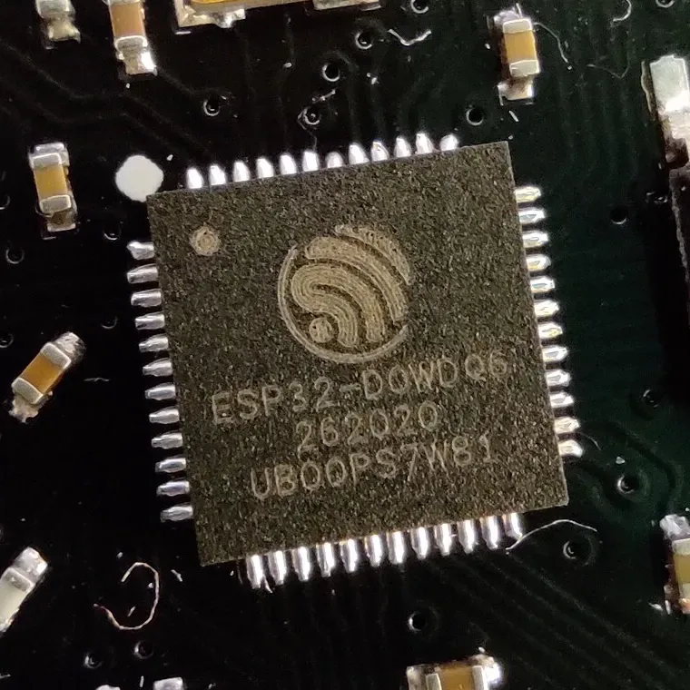
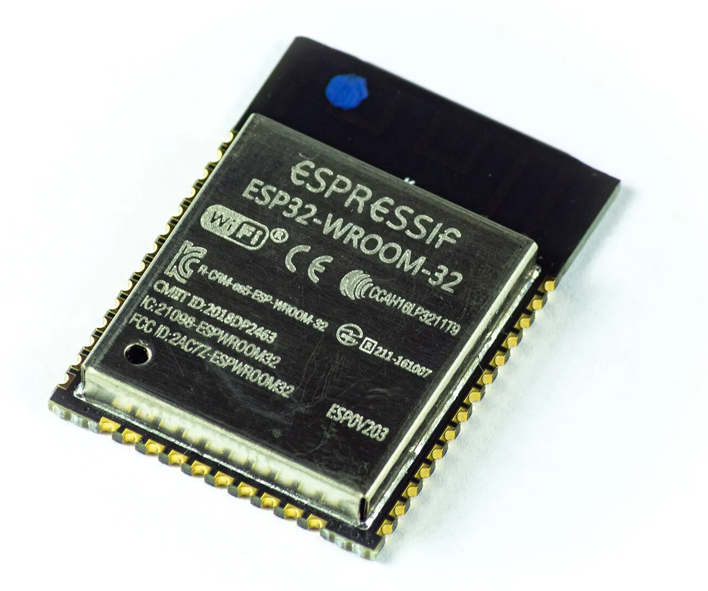
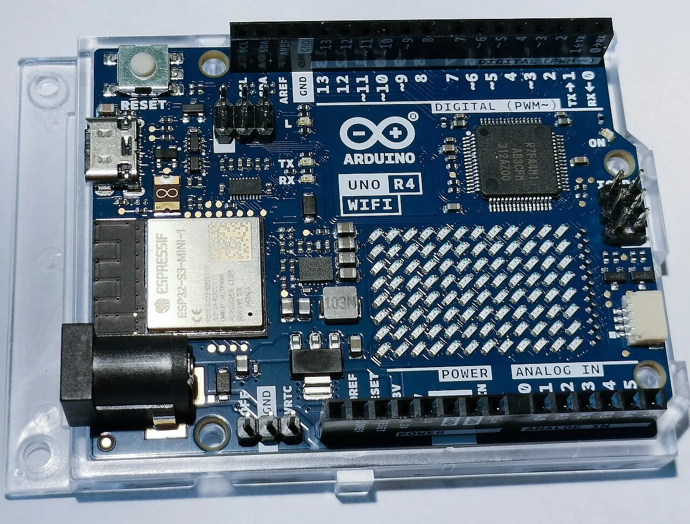
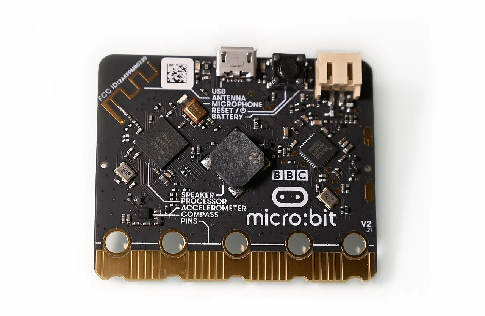
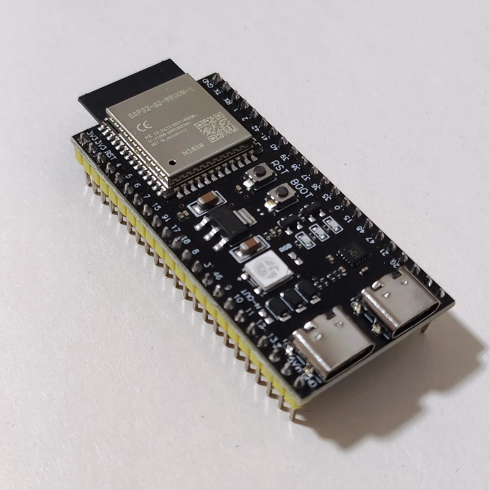
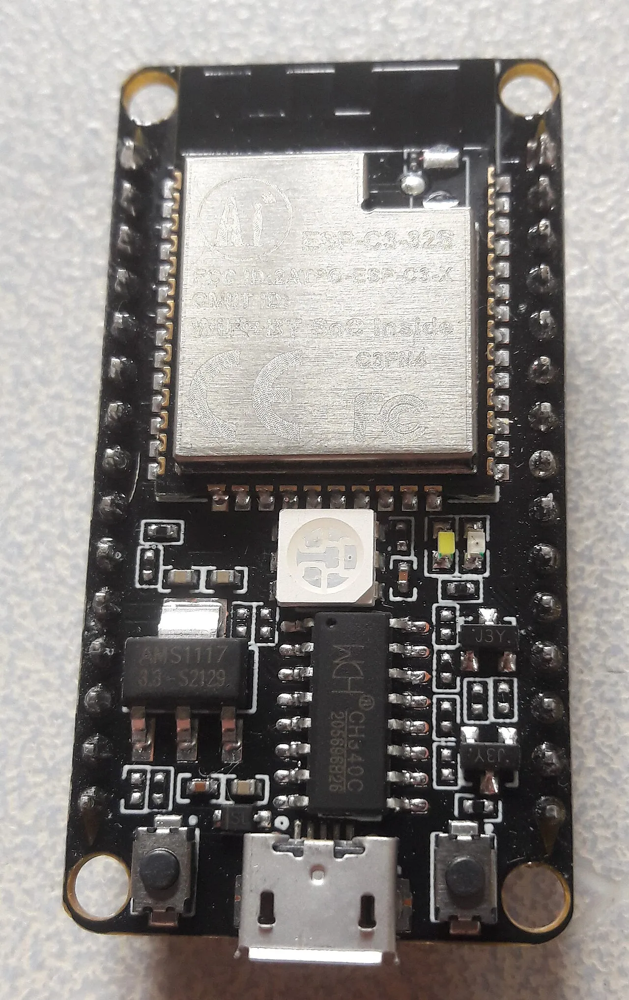
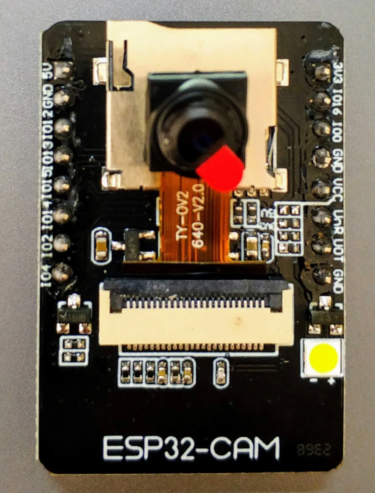
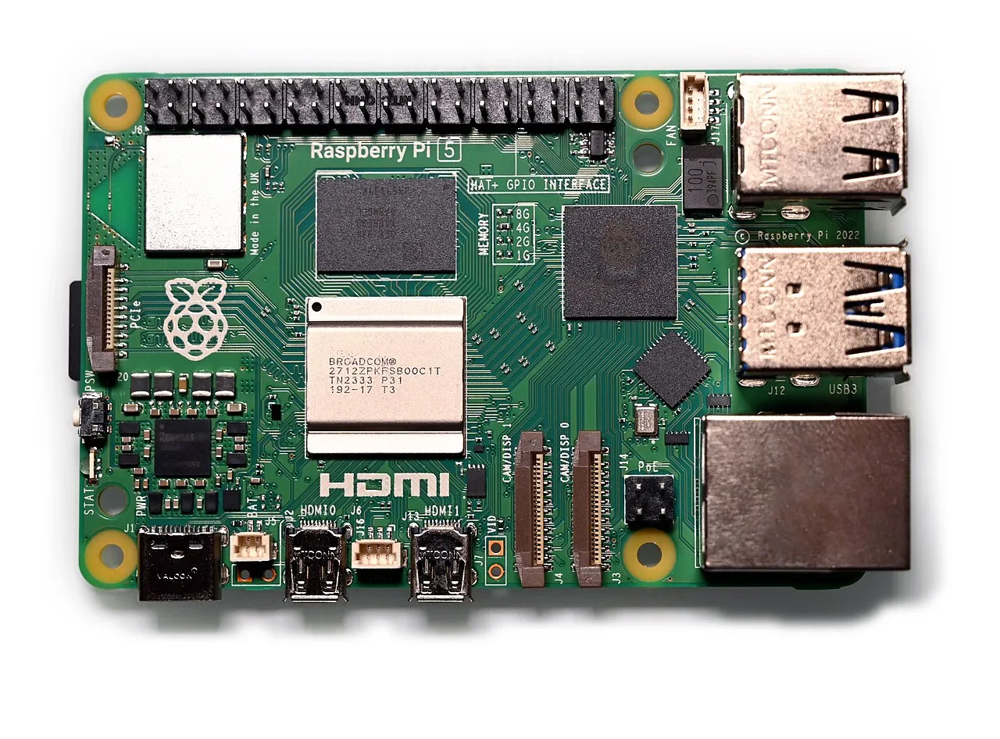

01
控制器在系統裡做什麼
控制器讀進感測器的訊號，依照程式決定要不要讓蜂鳴器、馬達、燈這些元件動作。
有些控制器還能「紀錄」（存進記憶體或記憶卡）和「傳送」（透過 Wi-Fi、藍牙或 USB 把資料送出去）。需不需要這兩件事，是挑板子時最先要問的。
02
先分清楚三組名詞
微控制器和單板電腦
| 微控制器（MCU） | 單板電腦（SBC） | |
|---|---|---|
| 例子 | Arduino Uno、ESP32、Raspberry Pi Pico | Raspberry Pi 5 |
| 執行什麼 | 一個你燒錄進去的程式 | Linux 作業系統，上面可以同時跑很多程式 |
| 開機 | 通電後大約一秒內就開始執行 | 要等作業系統開機，約數十秒 |
| 斷電 | 直接拔電沒關係 | 要先關機，否則記憶卡可能損壞 |
| 耗電 | 低，可以用電池 | 高，需要穩定的電源供應器 |
| 擅長 | 即時讀感測器、控制腳位 | 影像處理、跑 Python、架網站、跑 AI 模型 |
Arduino UNO Q 把兩者放在同一塊板子上：一顆跑 Linux 的處理器，加上一顆微控制器。
晶片、模組、開發板

晶片
ESP32

模組
ESP32-WROOM-32

開發板
ESP32 DevKit
- 晶片：真正負責運算的那顆 IC。
- 模組：晶片加上快閃記憶體、天線和金屬遮罩，已經通過無線認證，焊到電路板上就能用。
- 開發板：模組再加上 USB 接口、穩壓器、按鈕和排針，接上電腦就能燒錄程式。初學者要買的是開發板。
- Arduino Uno 也一樣：晶片是 ATmega328P，開發板是 Arduino Uno。
網路上寫「ESP32」，可能指晶片、模組或開發板，下單前看清楚品名和照片。
原廠板和相容板
- 原廠板：Arduino 公司生產。Uno R3 原廠板的 USB 晶片是 ATmega16U2。
- 相容板：其他廠商依照公開的電路設計生產，價格便宜很多。USB 晶片常換成 CH340，有些電腦要另外安裝驅動程式。
- 兩種板子的程式寫法相同。
03
規格要看什麼
拿本課會用到的兩塊板子來對照：
| 規格 | Arduino Uno R3 | ESP32 DevKit（經典款） | 什麼時候要在乎 |
|---|---|---|---|
| 工作電壓 | 5V | 3.3V | 接感測器模組時。輸出 5V 訊號的模組不能直接接 3.3V 的板子。 |
| 處理器 | 8 位元，16 MHz | 32 位元雙核心，最高 240 MHz | 要加密連線（HTTPS）、處理聲音或影像時。 |
| 程式空間（Flash） | 32 KB | 通常 4 MB | 程式要用到網路、網頁、大型函式庫時。 |
| 執行記憶體（SRAM） | 2 KB | 520 KB | 要處理很多文字、網頁或大量資料時。 |
| 數位腳位 | 14 支，其中 6 支可輸出 PWM | 約 25 支；GPIO 34、35、36、39 只能輸入 | 要接很多元件時。 |
| 類比輸入 | 6 支，10 位元（0–1023） | 最多 18 支，12 位元（0–4095）；開 Wi-Fi 時只能用 GPIO 32–36、39 | 讀旋鈕、光敏電阻這類連續變化的訊號時。 |
| 無線 | 無 | Wi-Fi 2.4 GHz、藍牙 | 不接電腦也要自己上網時。 |
| USB 晶片 | 原廠板 ATmega16U2，相容板常用 CH340 | 依板子而定，常見 CP2102、CH340 | 電腦找不到板子時，先查這顆晶片的驅動程式。 |
表格外還要看的
- 耗電與睡眠：ESP32 深度睡眠約 10 µA，這是晶片本身的數字。開發板上的 USB 晶片、穩壓器和電源燈會一直耗電，整塊板子常常是好幾 mA。要用電池時，看的是整塊板子的實測值。
- 開發環境：Arduino IDE（C++）可以寫 Uno 和 ESP32；ESP32、Raspberry Pi Pico 也能用 MicroPython；micro:bit 可以用積木（MakeCode）。
- 資料多寡：範例、函式庫和討論越多的板子，越容易查到答案，AI 也比較熟。新出或冷門的板子，AI 比較容易寫錯腳位，或用到不存在的函式。
- 尺寸與接腳：ESP32 開發板比較寬，插上一般麵包板後，兩側只剩很少的孔可以接線。
04
市面上的熱門控制器
| 板子 | 核心 | 電壓 | 無線 | 擅長 | 價位 |
|---|---|---|---|---|---|
| 入門教學 | |||||
 Arduino Uno R3 Arduino Uno R3 | ATmega328P，8 位元 16 MHz | 5V | 無 | 範例最多，5V 模組直接接 | $–$$ |
 Arduino Uno R4Minima／WiFi | Renesas RA4M1，32 位元 48 MHz | 5V | WiFi 版內建 ESP32-S3，負責 Wi-Fi 與藍牙 | 和 Uno R3 同尺寸、同腳位，速度和記憶體更大；WiFi 版有 12×8 LED 點陣 | $$ |
 BBC micro:bit V2 | nRF52833，32 位元 64 MHz | 3.3V | 藍牙 | 板上就有 LED 點陣、按鈕、加速度計、麥克風和喇叭，可以用積木寫程式 | $$ |
| Wi-Fi 與物聯網 | |||||
| ESP32 DevKit經典款 | ESP32，雙核心 240 MHz | 3.3V | Wi-Fi 2.4 GHz、藍牙 | 便宜、資料多，自己上網發通知最常用 | $ |
 ESP32-S3 開發板 | ESP32-S3，雙核心 240 MHz，有 AI 運算加速指令 | 3.3V | Wi-Fi 2.4 GHz、藍牙 | 內建 USB、可接相機、可跑小型 AI 模型 | $–$$ |
 ESP32-C3／C5／C6 開發板 | RISC-V，160–240 MHz | 3.3V | Wi-Fi、藍牙；C5、C6 是 Wi-Fi 6，另支援 Thread／Zigbee；C5 支援 5 GHz | 小、便宜、省電；C6 可接 Matter 智慧家庭 | $ |
| Seeed Studio XIAO ESP32C3／S3／C6 | 依型號 | 3.3V | 依晶片 | 拇指大小，適合穿戴和小型裝置 | $ |
 Raspberry Pi Pico 2Pico 2／Pico 2 W Raspberry Pi Pico 2Pico 2／Pico 2 W | RP2350，雙核心 150 MHz | 3.3V | Pico 2 W：Wi-Fi 2.4 GHz、藍牙 | 便宜，MicroPython 資料多 | $ |
| 相機與影像辨識 | |||||
 ESP32-CAM | ESP32 加上 OV2640 相機與記憶卡槽 | 3.3V，由 5V 供電 | Wi-Fi 2.4 GHz、藍牙 | 最便宜的拍照、串流方案；板上沒有 USB，要另外接燒錄板 | $ |
| XIAO ESP32-S3 Sense | ESP32-S3 加上相機和麥克風 | 3.3V | Wi-Fi 2.4 GHz、藍牙 | 小型影像與聲音辨識 | $$ |
| Realtek AMB82-mini | RTL8735B，500 MHz，影像辨識加速 0.4 TOPS | 3.3V | Wi-Fi 2.4／5 GHz、藍牙 | 板上就能跑物件偵測，用 Arduino IDE 寫程式 | $$ |
| Linux 單板電腦與混合型 | |||||
 Raspberry Pi 5 | 四核心 2.4 GHz，記憶體 1–16 GB | 3.3V | Wi-Fi 2.4／5 GHz、藍牙 | 跑 Python、資料庫、網站和 AI 模型，可接螢幕和相機 | $$$ |
| Arduino UNO Q | Qualcomm QRB2210（跑 Linux）加上 STM32U585 微控制器 | 3.3V | Wi-Fi 2.4／5 GHz、藍牙 | Linux 和即時控制在同一塊板子上 | $$$ |
價位：$ 約 300 元以下・$$ 約 300–1,000 元・$$$ 約 1,000 元以上。2026 年的大約區間，依通路和原廠或相容板而不同。
電壓指腳位的訊號電壓。
05
什麼任務用什麼板子
從第一題往下問，第一個回答「是」的就是答案：
要跑 Linux、Python 程式、資料庫或大型 AI 模型嗎？
是 →單板電腦：Raspberry Pi 5、Arduino UNO Q
要拍照或做影像辨識嗎？
是 →ESP32-CAM、XIAO ESP32-S3 Sense、AMB82-mini
不接電腦也要自己上網嗎？例如發通知、上傳資料、用手機遙控。
是 →ESP32 系列、Pico 2 W、Uno R4 WiFi
現場只有 5 GHz 的 Wi-Fi：選 ESP32-C5 或其他支援雙頻的板子。
要接 Matter／Thread 智慧家庭：選 ESP32-C6。
要靠電池撐好幾個月嗎？
是 →有深度睡眠、板上沒有多餘耗電元件的小板，例如 XIAO ESP32-C3／C6
以上都不需要，只讀感測器、控制燈和蜂鳴器
Arduino Uno R3／R4：5V 模組直接接，範例最多
常見任務
| 任務 | 建議 | 原因 |
|---|---|---|
| 防盜系統（本課微專案） | Uno R3 或 ESP32 | 兩種都做得到，差在由誰負責上網 |
| 教室溫濕度紀錄，上傳到雲端 | ESP32 | 自己上網，不用一直開著電腦 |
| 相撲機器人、自走車 | Uno 或 ESP32 | 讀感測器、控制馬達；要用手機遙控就選 ESP32 |
| 門口拍照，辨識有沒有人 | AMB82-mini、XIAO ESP32-S3 Sense | 板子上就能跑物件偵測 |
| 戶外用電池供電的感測站 | ESP32-C3／C6 小板 | 深度睡眠省電 |
| 國小學生入門 | micro:bit V2 | 板上有按鈕、LED 和感測器，可以用積木寫程式 |
| 用攝影機加 AI 模型做複雜辨識 | Raspberry Pi 5 | 記憶體和運算能力足夠 |
06
選錯會怎樣
- 5V 模組的輸出直接接到 3.3V 板子：腳位可能燒壞。例如 HC-SR04 的 Echo 腳輸出 5V，接 ESP32 前要先用電阻分壓。
- 經典 ESP32 只支援 2.4 GHz：家裡或學校只開 5 GHz 時，板子找不到網路。
- 學校 Wi-Fi 要網頁登入或帳號密碼（企業版 WPA2）：ESP32 很難連上，備案是手機熱點。
- Uno 的 2 KB 記憶體用完：程式不會報錯，而是跑一跑就重新開機，或印出亂碼。
- 腳位用錯：ESP32 的 GPIO 34–39 只能輸入；GPIO 0、2、12、15 接錯會開不了機或無法燒錄。
- 只看晶片的睡眠電流：開發板實際耗電可能是晶片規格的好幾百倍，電池幾天就沒電。
- USB 線只能充電、不能傳資料：電腦完全找不到板子。
- 相容板沒裝 USB 驅動程式：連接埠清單裡看不到板子。Windows、macOS、Linux 的處理方式見環境安裝講義。
- 冷門或剛上市的板子：AI 給的腳位和函式庫可能是錯的，要對照官方文件。
07
請 AI 幫你選
- 你要準備
- 寫下任務需求：要感測什麼、要控制什麼、要不要自己上網、用什麼供電、預算多少、手上已經有哪些零件、會用哪種程式語言。
- AI 能幫你
- 依需求比較幾塊板子的規格、列出每塊板子的風險、畫出接線表、估算耗電。
- 怎麼查證
- 規格以官方規格表和腳位圖為準；接線時看手上那塊板子上印的字；先燒最簡單的程式（例如讓 LED 閃爍），確認板子能燒錄。
- 常見陷阱
- AI 推薦已經停產的板子或不能用的服務。例如台灣的 2G 網路在 2017 年就關閉了，SIM800L 這類 2G 簡訊模組在台灣不能用。